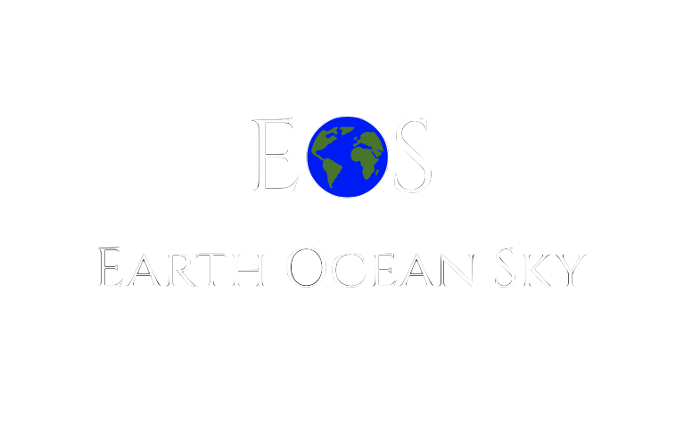
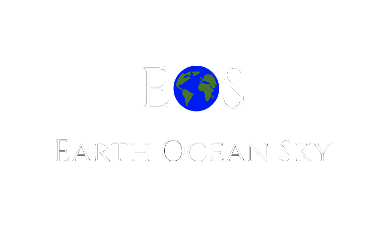

Facts & Stats About the Atmosphere (sky).
People who live in places with high levels of air pollutants have a 20% higher risk of death from lung cancer than people who live in less-polluted areas.1
Air pollution is any physical, chemical or biological particles that changes the natural atmosphere The IARC has classified many components of outdoor air pollution as carcinogens, including diesel engine exhaust, solvents, metals, and dust. Not only does air pollution strip away the earth's clear skies but negatively impacts our health.
It takes only 5 days for a jet stream in China to carry the air pollution to the United States.2
The earth's wind currents are all connected, and with the rise of climate change may cause shifts in the winds patterns. Even though it might seem like pollution in faraway places such as China are not your problem, they are and affect all of our air quality.
The people more susceptible to high ozone levels are children, elderly, people with lung disease, and people who are active outdoors.3
Ozone is one of the many causes of asthma and is linked to the increase in asthma in our population and is shown to cause COPD, shortness of breath, increase in susceptibility to infections of the lung among others. WIth more pollution in our air this will only worsen, a nice run outside should not put your lungs at risk.
Ways you can help!
Ways you can help is to minimize your impact on the atmosphere such as using public transportation, biking or carpooling instead of using your car; decrease your use of harmful chemicals; everyday things like plastic bottles, and even nail polish can break up into many small particles and turns into carcinogens; and spreading this on social media to inform other people.
Facts & Stats About the Land, Including People, Deforestation, Etc.
While children make up 10% of the world’s population, over 40% of the global burden of disease falls on them. More than 3 million children under age five die annually from environmental factors.4
Air pollution, and unsafe water and environmental factors that affect million of children around the world and will only get progressively worse with time if we do nothing about it.
5000 people die every day as a result of drinking unclean water.5
The most prevalent water quality problem is eutrophication, which in plain terms is the runoff from agriculture, domestic sewage and other pollutants. All the systems of earth are interconnected and the pollutants in the air will eventually end up in bodies of water and vice versa. Pollutants are the cause of many deaths and everyone should not accept this and take action.
The production of plastic uses around eight percent of the world's oil production (bioplastics are not a good solution as they require food source crops).6
Most plastics are unnecessary and the fact that they take up 8% is overwhelming and detrimental to the environment. Oil production is a major contributor to pollution and the earth's air quality. Bioplastics also contribute to pollution because they use food crops which then contribute to unclean water and more death.
Ways you can help!
Ways you can help to diminish these problems is to donate or volunteer to charities which help to combat these tragedies; reduce your impact on the environment by buying less goods that are made with oil and take a toll on the environment, such as plastic bottles, or even meat products; or reduce your footprint by carpooling, taking the bus, taking shorter showers, and remembering to turn off appliances when not in use.
Facts & Stats about the Ocean
Over 1 million seabirds and 100,000 sea mammals are killed by pollution every year.7
Trash that ends up in the ocean is not only detrimental to humans health but also to animals. Sea animals can mistakenly eat the trash and then not have enough room in their stomachs to eat food and then die of starvation. Even throwing away your trash will fix this problem because non-biodegradable and non-recyclable products like straws have a risk of being eaten by birds and causing death.
According to National Oceanic and Atmospheric Administration (NOAA), 80 percent of pollution in marine environment comes from the land through sources like runoff.8
The best way to eliminate the pollution in the ocean is to cut off the source which is the pollution on the land, because most of the pollution of the land will eventually go into streams that lead into the ocean.
Billions of pounds of plastic can be found in swirling convergences in the oceans making up about 40 percent of the world's ocean surfaces. 80 percent of pollution enters the ocean from the land.9
Plastic never actually biodegreates even in hundreds of years, the closest it comes is breaking apart into million of tiny particles that like particles in the air and cause many adverse effects like killing sea life.
Ways you can help!
Ways you can help to diminish these problems is to donate or volunteer to charities which help to combat these tragedies; reduce your impact on the environment by buying less goods that are made with oil and take a toll on the environment, such as plastic bottles, or even meat products; reduce your footprint by carpooling, taking the bus, taking shorter showers, and remembering to turn off appliances when not in use; or picking up trash whenever you see it.
Sources of Our Facts & Stats
1. “51 Facts About Pollution.” Conserve Energy Future, 25 Dec. 2016, www.conserve-energy-future.com/various-pollution-facts.php.↩
2. “51 Facts About Pollution.” Conserve Energy Future, 25 Dec. 2016, www.conserve-energy-future.com/various-pollution-facts.php.↩
3. “51 Facts About Pollution.” Conserve Energy Future, 25 Dec. 2016, www.conserve-energy-future.com/various-pollution-facts.php.↩
4. “11 Facts About Pollution.” DoSomething.org | Volunteer for Social Change, www.dosomething.org/us/facts/11-facts-about-pollution.↩
5. “51 Facts About Pollution.” Conserve Energy Future, 25 Dec. 2016, www.conserve-energy-future.com/various-pollution-facts.php.↩
6. EcoWatch. “22 Facts About Plastic Pollution (And 10 Things We Can Do About It).” EcoWatch, EcoWatch, 14 June 2018, www.ecowatch.com/22-facts-about-plastic-pollution-and-10-things-we-can-do-about-it-1881885971.html.↩
7. “11 Facts About Pollution.” DoSomething.org | Volunteer for Social Change, www.dosomething.org/us/facts/11-facts-about-pollution.↩
8. Bradford, Alina. “Pollution Facts & Types of Pollution.” LiveScience, Purch, 27 Feb. 2018, www.livescience.com/22728-pollution-facts.html.↩
9. EcoWatch. “22 Facts About Plastic Pollution (And 10 Things We Can Do About It).” EcoWatch, EcoWatch, 14 June 2018, www.ecowatch.com/22-facts-about-plastic-pollution-and-10-things-we-can-do-about-it-1881885971.html.<↩
Disclaimer! We do not guarantee that any of these facts are true, they are merely submissions from our readers with their sources included
 
